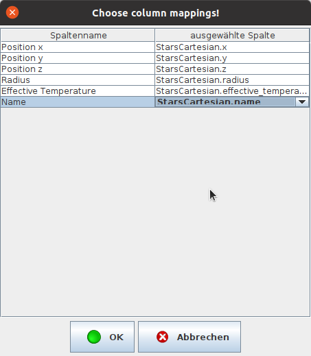
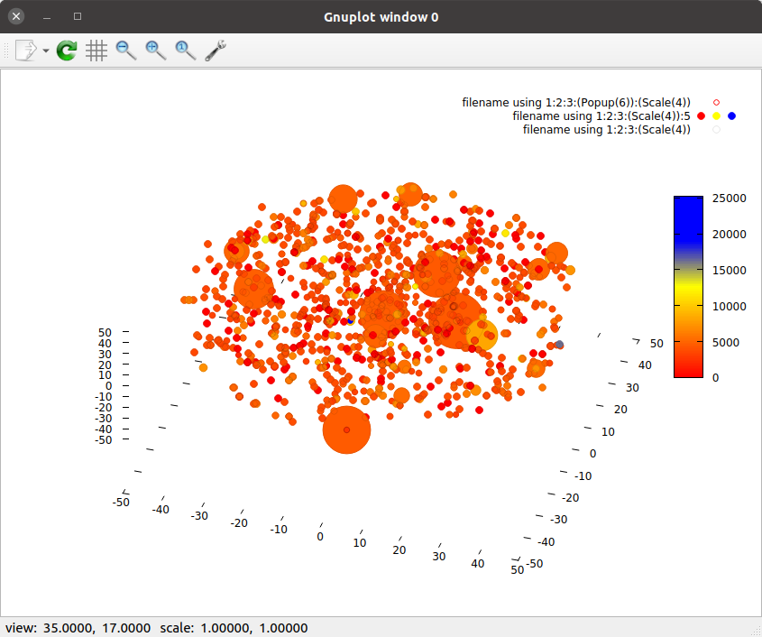
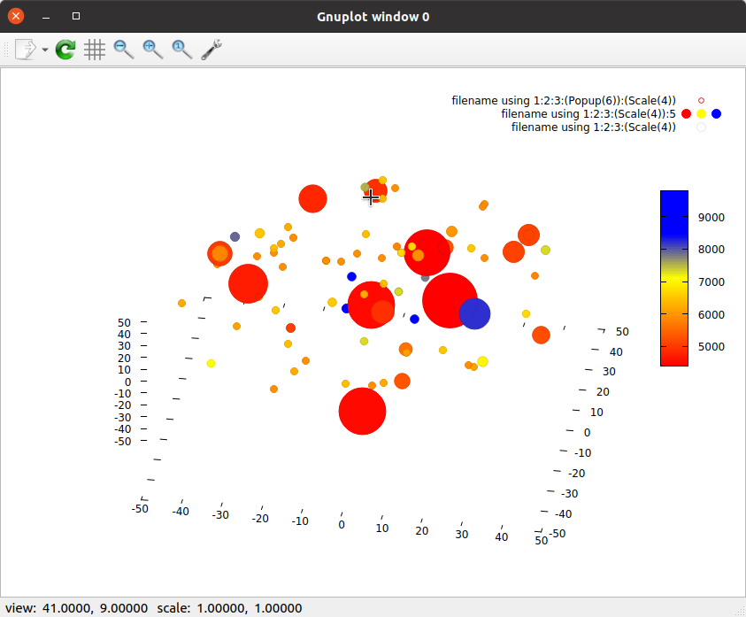

Brücke zwischen Gnuplot und sQLshell

Ich habe ein neues Plugin für die sQLshell geschrieben, das Gnuplot noch enger in die Anwendung integriert:
Ich fand ein Projekt, das die 1000 erdnächsten Sonnen visualisierte. Im Projekt geschah das in MatLab, aber ich dachte dabei sofort an andere Visualisierungsmöglichkeiten.
Ich versuchte zunächst - da ich das noch nie getan hatte - eine Visualisierung per Bubble-Chart in Gnuplot. Dabei sollten die Sonnen in einer 3D-Ansicht entsprechend ihrer Positionen visualisiert werden. Die Größe jeder "Bubble" sollte ihre relative Größe veranschaulichen und die Farbe ihre Temperatur.
Das folgende Skript erledigt genau das:
set term qt
set termoption enhanced
set size square
set datafile separator "\t"
#Scale(size) = 1+log(column(size))
Scale(size) = 1+0.3*column(size)
Popup(name) = sprintf("%s", stringcolumn(name))
set border 0
stats 'stars.dat' using 5 name "A"
set palette model RGB
#set palette defined (0 '#ff0000', 0.25 '#ffff00', 0.5 '#0000ff', 1 '#DDA0DD' )
set palette defined (0 '#ff0000', 0.5 '#ffff00', 0.75 '#0000ff', 1 '#0000ff' )
#set palette defined (0 'red', 0.5 'yellow', 0.75 'blue', 1 'blue' )
set cbrange [A_min:A_max]
splot 'stars.dat' using 1:2:3:(Popup(6)):(Scale(4)) with labels hypertext point pt 6 ps var lc palette, 'stars.dat' using 1:2:3:(Scale(4)):5 with points pt 7 ps var lc palette, 'stars.dat' using 1:2:3:(Scale(4)) with points pt 6 ps var lc rgb "black" lw 0.1
pause -1
Damit war ich jedoch noch nicht zufrieden - zwar konnte ich die dreidimensionale Darstellung (da ich das Gnuplot-Terminal "qt" benutzte) drehen und zoomen, aber ich konnte eben genau nur diese Darstellung von allen Seiten betrachten. Wenn ich nach bestimmten Sternen filtern wollte - etwa um nur bestimmte Spektralklassen zu betrachten - musste dies mühsam von Hand tun. Und wenn ich an Daten und filtern denke, denke ich an die sQLshell.
Die sQLshell hat zum Glück einen eingebauten CSV-JDBC-Treiber, sodass es eine Sache von Sekunden war, die Datei in der sQLshell als Tabelle zu sehen und entsprechend filtern zu können. Allerdings wollte ich nicht mühsam von Hand ein Skript schreiben, - nur um diese Daten zu sehen: Ich wollte eine generische Möglichkeit schaffen. Dazu überlegte ich mir, spezielle Kommentare in einem Gnuplot-Skript zu suchen, die die sQLshell darüber informieren würden, wieviele Spalten welchen Namens (und welche Datentypen) das jeweilige Gnuplot-Skript zum Funktionieren benötigt. Die sQLshell müsste dann dem Anwender einen maßgeschneiderten Dialog präsentieren, der es erlauben würde ein Mapping zwischen diesen Spalten und denen eines Ergebnis-Views in der sQLshell herzustellen. Gesagt - getan: Es gibt nun ein neues Plugin, das genau das tut.
Ein Beispiel für ein solches Skript ist die etwas angepasste Variante des oben dargestellten Skripts:
#sQLshell 1 java.lang.Number Position x
#sQLshell 2 java.lang.Number Position y
#sQLshell 3 java.lang.Number Position z
#sQLshell 4 java.lang.Number Radius
#sQLshell 5 java.lang.Number Effective Temperature
#sQLshell 6 java.lang.Object Name
set term qt
set termoption enhanced
set size square
set datafile separator "\t"
#Scale(size) = 1+log(column(size))
Scale(size) = 1+0.3*column(size)
Popup(name) = sprintf("%s", stringcolumn(name))
set border 0
stats filename using 5 name "A"
set palette model RGB
#set palette defined (0 '#ff0000', 0.25 '#ffff00', 0.5 '#0000ff', 1 '#DDA0DD' )
set palette defined (0 '#ff0000', 0.5 '#ffff00', 0.75 '#0000ff', 1 '#0000ff' )
#set palette defined (0 'red', 0.5 'yellow', 0.75 'blue', 1 'blue' )
set cbrange [A_min:A_max]
splot filename using 1:2:3:(Popup(6)):(Scale(4)) with labels hypertext point pt 6 ps var lc palette, filename using 1:2:3:(Scale(4)):5 with points pt 7 ps var lc palette, filename using 1:2:3:(Scale(4)) with points pt 6 ps var lc rgb "black" lw 0.1
pause -1
Dieses Skript zeigt die Darstellung unter Verwendung des QT Terminals von Gnuplot an und wartet darauf, dass der Anwender das fenster schließt. Der Nutzer kann die Darstellung interaktive erforschen (Dregen, Zoomen, ...) Die GUI für die Spezifikation des Mapping sieht zum Beispiel so aus:

Dialog zur Definition des Mapping zwischen Spalten aus dem Gnuplot-Skript und denen eines Ergebnis-Views in der sQLshellEin Beispiel für das Ergebnis der Visualisierung der 1000 erdnächsten Sonnen mittels dieses Skripts kann man hier sehen:

Ergebnis bei Benutzung des neuen Plugins der sQLshell in Verbindung mit dem gezeigten Gnuplot-SkriptUnd wenn man unter den 1000 erdnächsten nur diejenigen mit einem Radius herausfiltert, der größer ist als der der Sonne - zum Beispiel durch die Anweisung select * from StarsCartesian where radius>1 erhält man mit dem Ergebnis dieser Abfrage als Datengrundlage und diesem Plugin folgende Visualisierung:

Ergebnis bei Benutzung des neuen Plugins der sQLshell in Verbindung mit dem gezeigten Gnuplot-Skript und dem Filter zur Darstellung von Sternen mit größerem Radius als unserer Sonne 


Vor 5 Jahren hier im Blog
-
Gnuplot-Wrapper-Plugins
17.03.2019
Wie bereits in einem früheren Artikel angekündigt habe ich nunmehr zwei Plugins für die sQLshell fertiggestellt, die die Fähigkeiten von Gnuplot zur Visualisierung von numerischen Angaben gestatten
Weiterlesen...
Tags
Android Basteln C und C++ Chaos Datenbanken Docker dWb+ ESP Wifi Garten Geo Git(lab|hub) Go GUI Gui Hardware Java Jupyter Komponenten Links Linux Markdown Markup Music Numerik PKI-X.509-CA Python QBrowser Rants Raspi Revisited Security Software-Test sQLshell TeleGrafana Verschiedenes Video Virtualisierung Windows Upcoming...
Neueste Artikel
- Mehrere Datenbanken und Postgis-Erweiterung in Docker
Ich hatte ja schon beschrieben, dass ich mich in diesem Jahr wieder intensiver um mein Geoinformationssystem EBMap4D kümmern möchte. Dazu habe ich jetzt einige infrastrukturelle Vorbereitungen getroffen...
Weiterlesen... - sQLshell als Datenlieferant für EBMap4D
Ich habe neulich beschrieben, welche Vorbereitungen ich traf, um mein Geoinformationssystem EBMap4D mit der sQLshell zu integrieren.
Weiterlesen... - Minimierung von Angriffsoberflächen in Java
Ich habe in einem früheren Artikel darauf hingewiesen, dass Java (17) und Python (3.10) sich bei der Validierung von x509-Zertifikaten ein wenig unterscheiden. Einer der Unterschiede ist die Schwelle, ab der Schlüssel wegen zu geringer Länge als unsicher bewertet und die damit verbundenen Zertifikate abgelehnt werden.
Weiterlesen...
Manche nennen es Blog, manche Web-Seite - ich schreibe hier hin und wieder über meine Erlebnisse, Rückschläge und Erleuchtungen bei meinen Hobbies.
Wer daran teilhaben und eventuell sogar davon profitieren möchte, muß damit leben, daß ich hin und wieder kleine Ausflüge in Bereiche mache, die nichts mit IT, Administration oder Softwareentwicklung zu tun haben.
Ich wünsche allen Lesern viel Spaß und hin und wieder einen kleinen AHA!-Effekt...
PS: Meine öffentlichen GitHub-Repositories findet man hier - meine öffentlichen GitLab-Repositories finden sich dagegen hier.